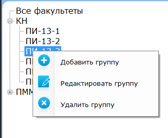

Для удаления факультета Вам необходимо кликнуть правой кнопкой мыши на факультете, который нужно удалить и выбрать пункт "Удалить факультет".

В открывшемся окне подтвердить удаление.
Для удаления группы Вам необходимо кликнуть правой кнопкой мыши по группе,которую нужно удалить и выбрать пункт "Удалить группу".

В открывшемся окне подтвердить удаление. После этого внесенные данные будут удалены из списка.
Учтите, что все студенты, относящиеся к данной группе или факультету будут тоже удалены!